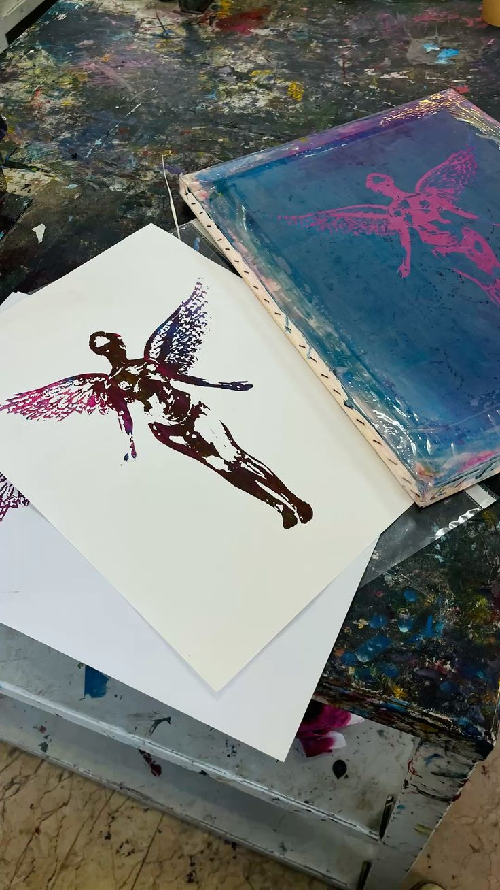

Estudios
Empece estudiando el grado medio de Impresión
el cual me metió completamente en el sector de las
Artes Gráficas.
Y ahora estoy haciendo el grado superior de Diseño
para poder ver un poco la otra cara del proceso.
Trabajo
Ahora estoy trabajando en un estudio/imprenta en el
cual me dedico a encargarme tanto de diseñar como
de producir y acabar los proyectos que nos encargan

Carrusel de mis gustos
Aqui podeis ver un poco lo que me gusta y lo que me hace desconectar.